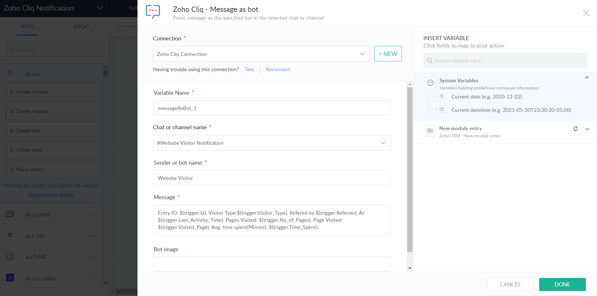

BritePH / Creator · Flow · Cliq
BritePH / Creator · Flow · Cliq
Event reporting & team updates
Event records, weekly summaries, and a configured team-chat notification bring reporting and communication together.
The need
Teams tracking shows need detailed event records and summarized sales information, while repeated updates in chat can create a separate reporting task.
The approach
Zoho Creator report views organize show information and weekly totals. A Zoho Flow action is configured to send a message through a Zoho Cliq bot.
Visible workflow
- Detailed reports include show dates, brands, sold-out status, and ticket or sales fields.
- Weekly report views group ticket and online sales totals by show brand.
- The Flow action defines the Cliq connection, destination, bot, and message variables.
Intended value
The setup is intended to make event information easier to review and share with the team.
Project evidence
Select a screenshot to enlarge it.
{kind=link}

Enlarge screenshotPlanning a similar project?
Discuss a project